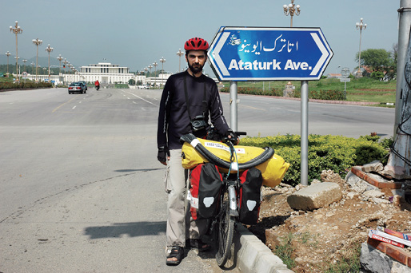

HİNDİSTAN, 17 Ağustos
İnci’yle yolculuğun gidişatı hakkında konuşuyoruz. Neler yapmak için yola çıkmıştık. Hangilerini yaptık? Hangileri kaldı? Defterin Nepal sayfalarına geçeceğiz. Hindistan kısmındaki bazı sayfalar boş kalacak. Hangi hedeflerimizi iptal etmemiz gerekecek? Yollar, sıcak, yanlış iç lastik seçimi lastiklerimizi kalbura çevirince, yedek lastik aramak için çok zaman harcadık. Günlerimiz sayılı.
Gelmeden önce Gürsel Abi’yle bir türlü buluşamadık. Bisikletlerimizi onun ehil ellerine teslim etsek kesinlikle daha iyi olacaktı. Malzemelerimizin büyük bölümünü sağlayan Aslı Bisiklet’te, 28 jant iç lastiğin biz İstanbul’da bulunduğumuz günde bitmiş olması ne şanssızlık. Benim piyasadan bulduğum ucuz yedeklere güvenmem ise ne büyük basiretsizlik.

Pakistan, İslamabat.
Atatürk Avenue (Caddesi) de olmanın gururu.
Hindistan’da çok az zamanımız kaldı. Bisikletlerimizi Agra’da bıraktık. Zaman azalıyor. Ölü yakma töreni için Varanasi’ye ayıracağımız zamanımız yok. Varanasi’de bazı dini ritüelleri izlemek için ayıracağımız zamanı, lastik patlakları için kullandığımızdan bisikletleri, yani yoldaşları Agra’da bırakıp bizi aktarmalı olarak Nepal’e götürecek trene yetişiyoruz. Agra’dan güç bela bilet alıp bindiğimiz trenle önce Varanasi’ye oradan da turist otobüsleriyle Katmandu’ya geçeceğiz. İstasyonda insan yığını yanında, otelden otele özel arabalarla seyahat eden, tertemiz Avrupalı turistlerin kostümlü hizmetlileri ve büyük valizleri dikkatimizden kaçmıyor. Trenin yakınlaşmasıyla etraf aydınlanıyor ve onlarca fare etrafa kaçışıyor. Bize değmeden geçmeleri için neredeyse zıpladığımız bu fare ordusundan trene binince kurtuluyoruz. Ancak trende de bizi, bir ordu kadar kalabalık olan yolcuların kol, kafa ve bacak yığını karşılıyor. Gece geç saat olduğu için uyuyan Hintlilerin üzerinden geçip koltuğumuza sığınıyoruz. Koku son raddede. Kendimizi çantalara kilitledikten sonra uykuya dalıyoruz. Sabah dillere destan olan Hindistan trenleriyle maceramız sona eriyor. Tren istasyonundan took tookla Varanasi’deki turist otobüsüne yetişiyoruz. Kutsal nehir Ganj üzerinden geçerken ölü yakma törenlerine göz ucuyla şahit olabiliyoruz. Rehber kitaplarda belirttiği gibi bu görmeniz değil hissetmeniz gereken bir tören. Nehrin üzerindeki köprü, uzaktan tüten dumanların ulaşamayacağı kadar uzak. Fakat dumanlar seçilebiliyor.
Tüm dinlerde kutsal olan gökyüzüne, yukarılara ulaşmanın mantıklı bir yoludur yakmak. Kutsal mekânlar, Babil Kulesi’nden, Mısır Piramitleri’nden bu yana hep göğe doğru yükselmiş. Katedral kuleleri de, cami minareleri de hep gökyüzüne doğru.
Ben yanmaktan çok buharlaşma diyorum buna.
Bedenin duman halinde yukarılara çıkması fikri hoşuma gidiyor. Atmosfere karışması, sonra yeniden yağmur olup yere inmesi. Bir devinim, bir çember geliyor gözümün önüne. Karbon ve azotun biteviye dönüşümü. Her şeyin topraktan gelip toprağa dönmesi. Aslında maddenin hiç azalmaması, sadece şekil değiştirmesi. Nerede başladığı ve bittiği belli olmayan bir çember. Biz de bu çemberin üzerindeyiz şu anda. Nerede döndüğümüzü bilmiyoruz.
Kendi bedenimin sonu gediğinde yapılacak tören için filmlerde gördüğüm sahnelerden birini isterdim. Bir sal üzerinde denize doğru itilmek, Vikinglerde olduğu gibi suya karışmak, ufka doğru yavaş yavaş kaybolmak. Usul usul, sanki pedal pedal ilerliyormuş gibi.